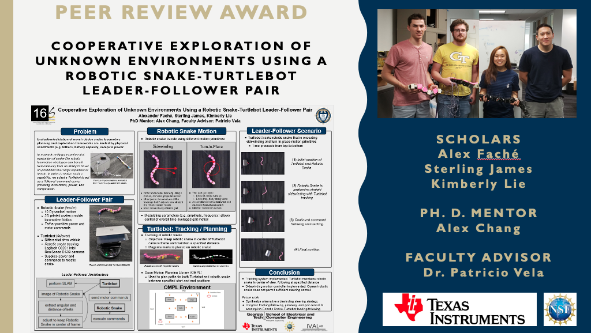

Environments characterizing disaster zones frequently impose locomotive limitations on traditionally larger, wheeled or tracked mobile platforms due to the inability to drive over large obstacles and a lack of precise maneuverability. Alternative robotic solutions demonstrate potential to overcome many of these limitations; snake-like robots, in particular, are advantaged in narrow, confined spaces, desert-like terrain as well as arboreal environments, among others that may be encountered in disaster zones comprising fallen rubble and blocked paths. Larger, wheeled robots, on the other hand, possess high-speed mobility useful for expedient traversal of large, obstacle-free expanses of terrain. The latter additionally support greater carrying capacity, allowing for more capable on-board computing as well as power capacity. We integrate instances of each class of mobile robots into a marsupial robotic pair that, together, leverages their individual strengths while limiting the drawbacks of either, to accomplish autonomous exploration in a planar, obstacle-cluttered environment. The marsupial pair, and accompanying robotic architecture we develop, are challenged to explore and navigate an arbitrary obstacle configuration in a planar indoor environment. In a collaborative manner that utilizes each platform according to its strengths, the Turtlebot and robotic snake employ SLAM and frontier exploration algorithms, in conjunction with locomotive primitives available to each, to cooperatively explore, map, and navigate an initially unknown scenario.
Judging conducted by all Opportunity Reseach Scholars' students and mentors on technical quality and visual appeal.
